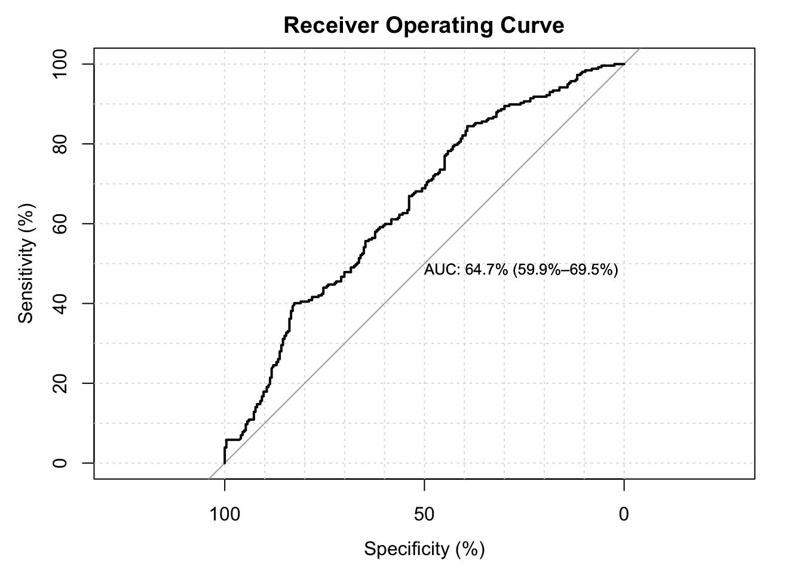

Logistic
Logistic Regression
# Fit Logistic Regression
lg_burn <- glm(burn ~ X+Y+month+day+FFMC+DMC+DC+ISI+temp+RH+wind+rain, family=binomial(),data=new_dat)
summary(lg_burn)##
## Call:
## glm(formula = burn ~ X + Y + month + day + FFMC + DMC + DC +
## ISI + temp + RH + wind + rain, family = binomial(), data = new_dat)
##
## Deviance Residuals:
## Min 1Q Median 3Q Max
## -1.59243 -1.16846 0.00038 1.11144 1.99644
##
## Coefficients:
## Estimate Std. Error z value Pr(>|z|)
## (Intercept) -7.282e+00 3.485e+00 -2.090 0.0366 *
## X 5.473e-02 4.895e-02 1.118 0.2636
## Y 4.653e-02 9.349e-02 0.498 0.6187
## monthaug -5.892e-01 1.277e+00 -0.461 0.6446
## monthdec 1.683e+01 7.894e+02 0.021 0.9830
## monthfeb 6.951e-01 8.730e-01 0.796 0.4259
## monthjan -1.446e+01 1.417e+03 -0.010 0.9919
## monthjul -5.139e-01 1.129e+00 -0.455 0.6489
## monthjun -5.395e-01 1.042e+00 -0.518 0.6047
## monthmar -3.265e-01 8.120e-01 -0.402 0.6876
## monthmay 1.172e-01 1.630e+00 0.072 0.9427
## monthnov -1.591e+01 2.400e+03 -0.007 0.9947
## monthoct -1.407e+00 1.515e+00 -0.928 0.3532
## monthsep -4.984e-01 1.428e+00 -0.349 0.7270
## daymon 4.548e-02 3.439e-01 0.132 0.8948
## daysat -1.840e-02 3.277e-01 -0.056 0.9552
## daysun -4.778e-02 3.178e-01 -0.150 0.8805
## daythu -5.141e-02 3.596e-01 -0.143 0.8863
## daytue 2.252e-01 3.563e-01 0.632 0.5272
## daywed 3.045e-01 3.713e-01 0.820 0.4122
## FFMC 5.855e-02 3.780e-02 1.549 0.1214
## DMC -1.574e-03 2.830e-03 -0.556 0.5781
## DC 1.338e-03 1.921e-03 0.697 0.4860
## ISI -1.922e-02 2.959e-02 -0.649 0.5160
## temp 4.648e-02 3.448e-02 1.348 0.1777
## RH 8.667e-03 9.863e-03 0.879 0.3796
## wind 7.701e-02 5.926e-02 1.300 0.1937
## rain -1.824e+00 1.212e+00 -1.505 0.1323
## ---
## Signif. codes: 0 '***' 0.001 '**' 0.01 '*' 0.05 '.' 0.1 ' ' 1
##
## (Dispersion parameter for binomial family taken to be 1)
##
## Null deviance: 698.49 on 503 degrees of freedom
## Residual deviance: 659.75 on 476 degrees of freedom
## AIC: 715.75
##
## Number of Fisher Scoring iterations: 15lg_burn2 <- glm(burn ~X+Y+month+day+FFMC+DMC+DC+ISI+temp+I(temp^2)+RH+wind+rain, family=binomial(), data=new_dat)
summary(lg_burn2)##
## Call:
## glm(formula = burn ~ X + Y + month + day + FFMC + DMC + DC +
## ISI + temp + I(temp^2) + RH + wind + rain, family = binomial(),
## data = new_dat)
##
## Deviance Residuals:
## Min 1Q Median 3Q Max
## -1.70590 -1.15430 0.00038 1.11515 1.95384
##
## Coefficients:
## Estimate Std. Error z value Pr(>|z|)
## (Intercept) -5.853e+00 3.596e+00 -1.628 0.1036
## X 5.478e-02 4.910e-02 1.116 0.2645
## Y 4.683e-02 9.378e-02 0.499 0.6175
## monthaug -1.315e-01 1.310e+00 -0.100 0.9200
## monthdec 1.615e+01 7.926e+02 0.020 0.9837
## monthfeb 5.275e-01 8.786e-01 0.600 0.5482
## monthjan -1.495e+01 1.382e+03 -0.011 0.9914
## monthjul -1.175e-01 1.155e+00 -0.102 0.9190
## monthjun -1.317e-01 1.071e+00 -0.123 0.9021
## monthmar -2.278e-01 8.129e-01 -0.280 0.7793
## monthmay 3.687e-01 1.641e+00 0.225 0.8222
## monthnov -1.591e+01 2.400e+03 -0.007 0.9947
## monthoct -9.712e-01 1.541e+00 -0.630 0.5285
## monthsep -1.408e-02 1.462e+00 -0.010 0.9923
## daymon -2.246e-02 3.470e-01 -0.065 0.9484
## daysat -2.987e-02 3.290e-01 -0.091 0.9277
## daysun -7.438e-02 3.191e-01 -0.233 0.8157
## daythu -1.297e-01 3.632e-01 -0.357 0.7210
## daytue 2.034e-01 3.577e-01 0.569 0.5697
## daywed 2.532e-01 3.740e-01 0.677 0.4983
## FFMC 6.201e-02 3.824e-02 1.621 0.1049
## DMC -1.581e-03 2.839e-03 -0.557 0.5777
## DC 1.110e-03 1.937e-03 0.573 0.5664
## ISI -2.627e-02 3.076e-02 -0.854 0.3930
## temp -1.349e-01 1.130e-01 -1.194 0.2326
## I(temp^2) 4.383e-03 2.613e-03 1.677 0.0935 .
## RH 4.980e-03 1.011e-02 0.493 0.6224
## wind 7.505e-02 5.937e-02 1.264 0.2062
## rain -1.629e+00 1.208e+00 -1.349 0.1774
## ---
## Signif. codes: 0 '***' 0.001 '**' 0.01 '*' 0.05 '.' 0.1 ' ' 1
##
## (Dispersion parameter for binomial family taken to be 1)
##
## Null deviance: 698.49 on 503 degrees of freedom
## Residual deviance: 656.88 on 475 degrees of freedom
## AIC: 714.88
##
## Number of Fisher Scoring iterations: 15hoslem.test(new_dat$burn, fitted(lg_burn), g=10) #not a poor fit (small P-value, poor fit, H0:good fit)##
## Hosmer and Lemeshow goodness of fit (GOF) test
##
## data: new_dat$burn, fitted(lg_burn)
## X-squared = 6.6071, df = 8, p-value = 0.5796hoslem.test(new_dat$burn, fitted(lg_burn2), g=10) #not a poor fit##
## Hosmer and Lemeshow goodness of fit (GOF) test
##
## data: new_dat$burn, fitted(lg_burn2)
## X-squared = 21.008, df = 8, p-value = 0.007127gof(lg_burn) #AUC=64.0%## Warning: glm.fit: fitted probabilities numerically 0 or 1 occurred
## Warning: glm.fit: fitted probabilities numerically 0 or 1 occurred
## Warning: glm.fit: fitted probabilities numerically 0 or 1 occurred## Setting levels: control = 0, case = 1## Setting direction: controls < cases
## chiSq df pVal
## PrI 2 2 2
## drI 4 2 4
## PrG 1 1 1
## drG 3 1 3
## PrCT 1 1 1
## drCT 3 1 3
## val df pVal
## HL chiSq 9 3 8
## mHL F 7 4 2
## OsRo Z 1 5 9
## SstPgeq0.5 Z 5 5 3
## SstPl0.5 Z 3 5 5
## SstBoth chiSq 6 2 7
## SllPgeq0.5 chiSq 4 1 4
## SllPl0.5 chiSq 2 1 6
## SllBoth chiSq 8 2 1gof(lg_burn2) #AUC=64.7%## Warning: glm.fit: fitted probabilities numerically 0 or 1 occurred
## Warning: glm.fit: fitted probabilities numerically 0 or 1 occurred
## Warning: glm.fit: fitted probabilities numerically 0 or 1 occurred## Setting levels: control = 0, case = 1
## Setting direction: controls < cases
## chiSq df pVal
## PrI 2 2 2
## drI 4 2 4
## PrG 1 1 1
## drG 3 1 3
## PrCT 1 1 1
## drCT 3 1 3
## val df pVal
## HL chiSq 9 3 2
## mHL F 5 4 1
## OsRo Z 1 5 9
## SstPgeq0.5 Z 4 5 3
## SstPl0.5 Z 3 5 8
## SstBoth chiSq 8 2 5
## SllPgeq0.5 chiSq 6 1 4
## SllPl0.5 chiSq 2 1 7
## SllBoth chiSq 7 2 6